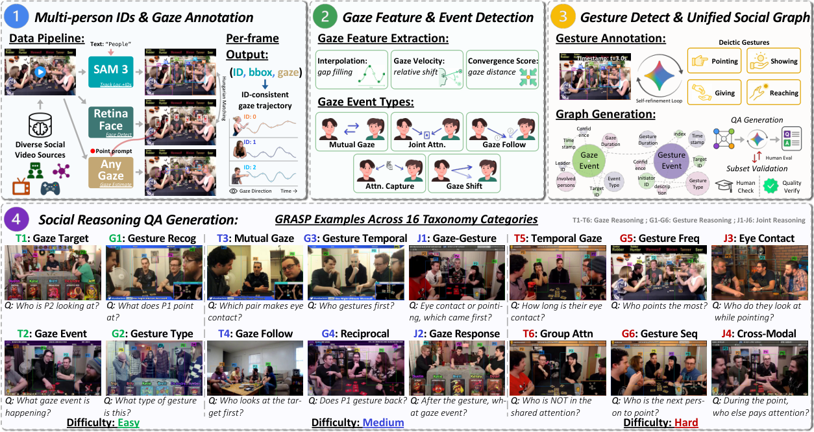
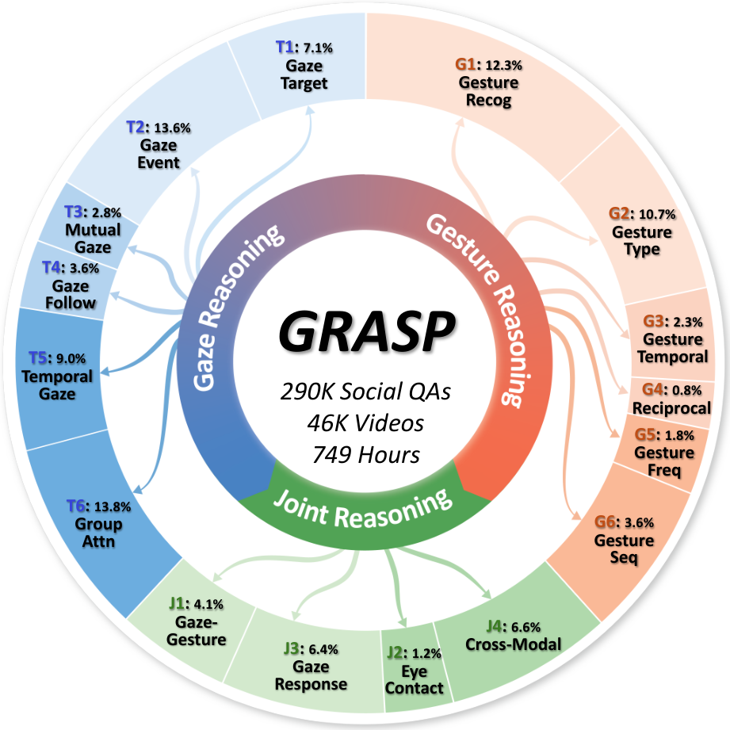
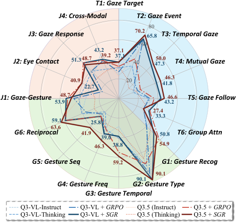

Understanding social interactions requires reasoning over subtle non-verbal cues, yet current multimodal large language models (MLLMs) often fail to identify who interacts with whom in multi-person videos. We introduce GRASP, a large-scale social reasoning dataset that connects high-level social QA with fine-grained gaze and deictic gesture events. GRASP contains 290K question–answer pairs over 46K videos totaling 749 hours, organized by a 16-category taxonomy spanning gaze, gesture, and joint gaze–gesture reasoning, together with GRASP-Bench for evaluation. Unlike prior resources that focus on either isolated cues or high-level social QA, GRASP builds questions from identity-consistent gaze trajectories, deictic gestures, and their joint compositions into social events. Moreover, we propose Social Grounding Reward (SGR), a learning signal that uses these social events to encourage models to reason about the participants involved in each interaction. Experiments show that SGR improves performance on GRASP-Bench while maintaining zero-shot performance on related social video QA benchmarks.
GRASP converts multi-person videos into person-consistent gaze and gesture events, composes them into structured social QA pairs, and applies subset validation with human feedback for quality control. Questions are built from identity-consistent gaze trajectories, deictic gestures, and their joint compositions into social events — not from scene-level captions.



One representative example per category. Play the clip, then reveal the answer. Overlaid boxes show person-consistent identities used to ground each question.
Standard outcome-only RL rewards let models guess the right option while attending to the wrong people. SGR is a participant-level learning signal built directly on GRASP's structured social events: during GRPO post-training, the model is rewarded for reasoning about the correct participants involved in each gaze or gesture interaction, not just for the final answer.
Because every GRASP question is generated from an underlying social event graph, the ground-truth participants are known for free — the dataset and the reward are coupled by design. SGR-trained models improve substantially on GRASP-Bench while maintaining zero-shot performance on related social video QA benchmarks (MMSI, Online-MMSI, TVQA+), showing that grounded social reasoning does not come at the cost of general video QA ability.
Accuracy (%) grouped by reasoning type. With SGR, open 8–9B models surpass the strongest proprietary model evaluated (Gemini 3.1 Pro). Full 16-category results are in the paper.
| Method | Gaze | Gesture | Joint | Overall |
|---|---|---|---|---|
| Proprietary | ||||
| Claude Sonnet 4.6 | 30.2 | 46.5 | 37.3 | 37.0 |
| GPT-5.4 | 34.9 | 60.4 | 39.0 | 43.9 |
| Gemini 3.1 Pro | 41.8 | 67.6 | 44.3 | 50.5 |
| Open-source (SFT / instruct) | ||||
| Qwen3-VL-8B-Instruct | 28.3 | 52.7 | 38.0 | 38.3 |
| Qwen3.5-9B (Instruct) | 32.8 | 59.0 | 40.8 | 43.0 |
| Open-source (RL post-trained) | ||||
| Video-R1-7B | 37.1 | 34.8 | 36.6 | 36.3 |
| Qwen3-VL-8B-Thinking | 28.1 | 48.4 | 38.0 | 36.9 |
| Socially-grounded RL (ours) | ||||
| Qwen3-VL-8B + SGR | 46.3 | 58.0 | 48.1 | 50.4 |
| Qwen3.5-9B + SGR | 48.0 | 64.4 | 45.6 | 52.6 |